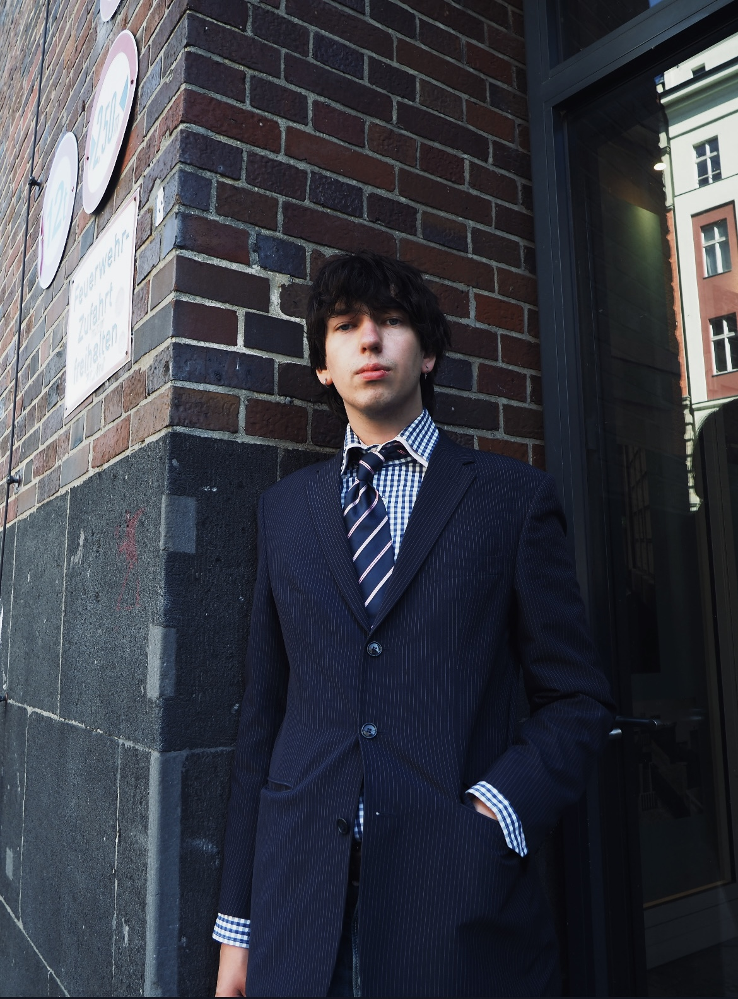

Über mich


Mich haben nie einzelne Disziplinen interessiert. Mich interessierte immer der Mensch — als denkendes, fühlendes und nach Sinn suchendes Wesen. Fragen nach Identität, Sprache, Kreativität und Gemeinschaft begleiten mich seit meiner Kindheit. Bis heute versuche ich ihnen auf unterschiedlichen Wegen nachzugehen: in der Psychologie, im Zeichnen, am Klavier, im Schreiben und in Projekten mit anderen.
Aufgewachsen bin ich in Heidelberg, in einer Familie, in der Kunst, Musik und Sprache selbstverständlich zum Leben gehörten. Mein Großvater Lui Schaugg war Maler; auch andere Angehörige arbeiteten in Grafik und Glaskunst. Daneben wurde viel gelesen, geschrieben und diskutiert. Rückblickend erklärt das vielleicht, warum ich Psychologie, Kunst oder Musik nie als getrennte Bereiche wahrgenommen habe. Sie erschienen mir immer als unterschiedliche Möglichkeiten, dieselbe Wirklichkeit zu betrachten.
Schon früh faszinierte mich Sprache — nicht nur als Mittel der Kommunikation, sondern als Möglichkeit, Erfahrungen festzuhalten und Wirklichkeit zu beschreiben. Gleichzeitig wurden Zeichnen, Schreiben und später das Klavier für mich zu eigenen Sprachen. Nicht, weil sie Worte ersetzen, sondern weil sie Aspekte menschlicher Erfahrung ausdrücken können, die sich allein mit Begriffen oft nur unzureichend erfassen lassen.
Während viele philosophische oder literarische Texte für andere vor allem Schulstoff waren, hatte ich oft das Gefühl, dass sie von etwas handelten, das mich unmittelbar betrifft. Hermann Hesse, Erich Maria Remarque oder Ferdinand von Schirach, später Künstler wie Egon Schiele, George Grosz oder Anselm Kiefer — sie alle verband für mich weniger ein Stil als die Ernsthaftigkeit, mit der sie sich den grundlegenden Fragen des Menschseins näherten. Mich beeindruckten Menschen, die bereit waren, weiterzudenken, Widersprüche auszuhalten und sich mit Themen auseinanderzusetzen, die sich nicht in einfachen Antworten erschöpfen.
Je mehr ich darüber nachdachte, desto deutlicher wurde mir, dass mich weniger ein bestimmtes Medium faszinierte als der Mensch selbst. Gestaltung war ein Zugang, Psychologie schien mir das breiteste Fundament. Nicht als Gegenpol zur Kunst, sondern als ihre Ergänzung. Sie eröffnete den umfassendsten Zugang zu den Fragen, die mich ohnehin beschäftigten: Wie entstehen Identität, Sprache und Kreativität? Warum erzählen Menschen Geschichten, machen Musik oder schaffen Bilder? Was suchen sie darin — und was sagt das über uns aus?
Auch meine heutige Arbeit folgt letztlich derselben Suche. Ob wissenschaftliche Forschung, Zeichnungen, Improvisationen am Klavier oder Projekte wie YOLD und NeuHier — ich sehe darin keine verschiedenen Lebensbereiche, sondern unterschiedliche Sprachen, mit denen sich dieselbe Wirklichkeit erkunden lässt. Mich interessiert, wie Menschen sich selbst verstehen, wie sie einander begegnen und wie aus Erfahrungen, Geschichten und Beziehungen Identität entsteht.
Seit meiner Kindheit begleitet mich dieselbe Frage: Was bedeutet es, als sinnsuchender Mensch in dieser Welt zu sein?
Ich suche seit meiner Kindheit nach einer Sprache für das Menschliche.